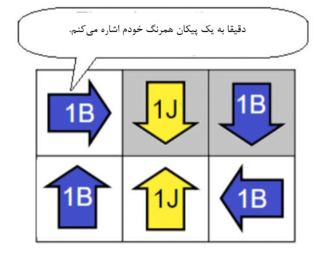
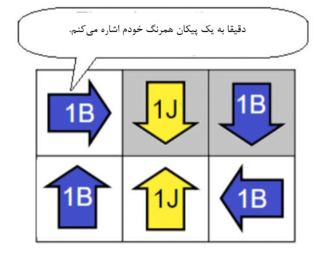

دوئل پیکانها
میگوییم پیکان اول به پیکان دوم اشاره میکند اگر پیکان دوم در راستای جهتی باشد که پیکان اول به سمت آن است.
مثال


همهی پیکانها را با توجه به قانون زیر رنگ آمیزی کنید:قوانین زیر رنگ آمیزی کنید:
هر پیکان باید به دقیقا یک دو پیکان همرنگ خود اشاره کند.
پیکان آبی باید به دو پیکان همرنگ خود اشاره کند. |
|
پیکان زرد باید به دقیقا یک یک پیکان همرنگ خود اشاره کند. |
برای تغییر رنگ هر پیکان بر روی آن بزنید .
مثال